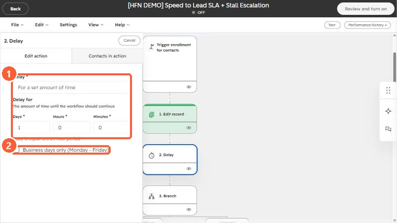
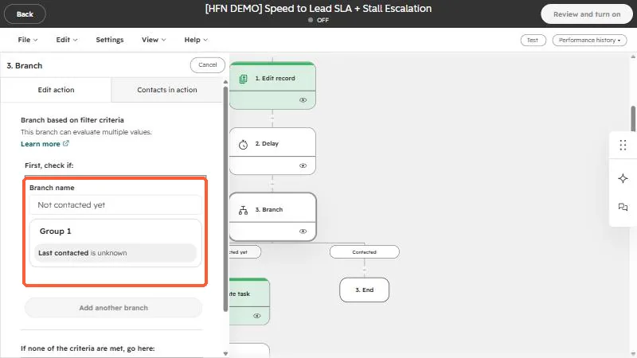

Short answer
A Delay pauses a record. Choose For a set amount of time and set days, hours, and minutes. A day is a 24 hour period, and you can tick Business days only (Monday - Friday). A branch sends records down different paths based on filter criteria, such as Last contacted is unknown, and has a path for records that match none of the criteria. Combine them to wait, then check, then act.
1. The Delay action
Click a delay on the canvas of a workflow in Workflows and its settings open. The first field chooses the type of delay. The one in this demo is For a set amount of time, with Days, Hours, and Minutes below it. HubSpot also offers delays until a calendar date, a day of the week, or a time of day.


- The panel reminds you that one day equals a 24 hour period.
- Business days only (Monday - Friday) skips the weekend when it counts days. Tick it when a delay is meant to be a work-day wait.
- A delay holds the record at that step. Contacts waiting there are listed under the Contacts in action tab.
2. The if/then branch
A branch based on filter criteria evaluates conditions and sends a record down the first path whose conditions it meets. In the demo, a branch named Not contacted yet checks whether Last contacted is unknown. Everything else goes to the default path, labeled with what to do if none of the criteria are met.


- Give each branch a clear name, since the name is what you see on the canvas.
- You can add another branch to test more conditions in order.
- Put the most specific condition first.
3. Put them together
The pattern "wait, check, then act" is a delay followed by a branch. For a worked example, see the speed-to-lead workflow, which waits a day, branches on whether anyone made contact, and acts on the answer.
If a workflow limits actions to certain days and times, HubSpot does not reschedule delays and branches. The action after them is what waits. See workflow settings explained.